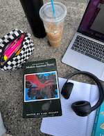

All About Me
Madison Murphy
Who Is Madison?
Hi, I'm Madison, but you can call me Maddie! I'm a 20 year old college student from Northbridge, Massachusetts. My zodiac sign is a Cancer and in my free time I love to read, drive around and listen to music, shop (especially thrifting), and spend time in nature. I'm an animal lover and have plenty of pets including dogs, cats, sugar gliders, and chickens. I also love self care in the form of going to the gym and cooking vegetarian meals that are both nutritious and delicious! I'm a big believer in equality and social justice and I hope to combine that passion with my writing skills to get a career in non-profits!

Academics
I'm currently in my junior year at the University of Massachusetts Amherst. I'm majoring in English and completing my certificate in Professional Writing and Technical Communication.
